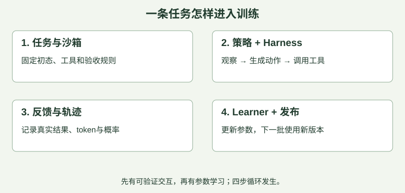

1. 一次Agent任务如何变成一次训练
先记住：Agentic RL训练的是模型在与环境交互时，怎样选择更有利于完成任务的行动。 能调用工具只是运行能力；只有收集交互结果、计算训练信号并更新参数，才进入RL训练闭环。
用一个贯穿课程的教学任务说明：在隔离的代码仓库里修复CSV解析器，并通过隐藏测试。 这不是Accio业务原题，而是为了把概念落到具体对象。
| 对象 | 在例子中是什么 | 容易混淆的地方 |
|---|---|---|
| Policy / actor | 生成分析、补丁和工具调用的语言模型 | actor是可训练策略，不等于整个Agent程序 |
| Harness / agent loop | 组装上下文、校验调用、执行工具、管理循环的程序 | harness可变化，但通常不通过梯度一起训练 |
| Environment | 仓库、文件、shell、测试程序等状态及交互规则 | 环境不只是一个Docker镜像 |
| Sandbox | 承载执行的隔离空间及资源边界 | sandbox解决“在哪执行”，不自动定义任务成功 |
| Reward / verifier | 根据规定评估修复是否满足要求 | “模型说修好了”不能作为充分证据 |
| Learner | 根据轨迹和学习目标更新模型的训练进程 | 一般不必与每个工具执行器放在同一个沙箱 |

走一遍： ①从固定仓库版本创建任务环境；②模型请求读文件；③harness执行并返回文件内容；④模型写补丁、跑测试；⑤可信评测器检查提交后的结果；⑥把模型生成的token、采样概率、mask和奖励转换成训练样本；⑦learner更新参数，按约定发布新权重。
为什么必须区分模型与harness？ 若只给同一个模型换了更好的搜索工具，成功率也可能上涨。这说明系统更强，但不能直接归因为“RL把模型训强了”。
例题。 A系统只记录Agent日志；B系统将日志送入训练器，但学习率为0；C系统利用经过验证的交互结果更新策略。哪个真正完成了策略学习？C。 A只有数据，B没有实际更新；更新后还要独立评测，才能判断学到了什么。
考前复述： “我会分别说明策略、交互程序、环境执行与学习器，再说明训练数据怎样从一次任务中产生。”
原整理核对依据：V1 · verl Agent Loop H1 · Harbor Core Concepts D0 · Dressage README
读完本节，立即练3题
仅更换了更强的搜索工具，固定模型的任务成功率从40%升至55%。最严谨的结论是？
无脚本阅读：查看答案与解析
正确答案：B- A错误：没有发生参数训练的证据。
- B正确：工具与harness变化也能带来收益，需要控制变量。
- C错误：成功率变化不直接证明reward正确。
- D错误：某项改善不能推出不需要训练。
- A错误：没有发生参数训练的证据。
- B正确：工具与harness变化也能带来收益，需要控制变量。
- C错误：成功率变化不直接证明reward正确。
- D错误：某项改善不能推出不需要训练。
代码Agent的训练中，哪个组件最直接负责把梯度用于更新模型参数？
- A错误：镜像保存执行依赖。
- B错误：stdout是观测，不执行梯度更新。
- C正确：Learner执行优化器步骤更新策略。
- D错误：ID用于标识与追踪。
哪些是合理的组件划分？
- A正确：Policy提供动作分布。
- B正确：实际执行由宿主程序调度。
- C错误：隔离空间本身不定义任务成功。
- D正确：需要明确且可信的评测逻辑。
继续口述：请用两分钟画出你做过的Agentic RL训练闭环。
先闭卷讲2分钟，再对照要点；页面不自动判断口述正确性。
展开口述自检要点
- 说清每个组件输入输出与本人负责的边界。
- 说明工具执行在哪发生、奖励由谁产生。
- 给出权重更新如何影响下一批采样。
2. 状态、观察、动作与长程信用分配
环境状态是真实世界里发生了什么；观察是Agent这次看到了什么。 文件被修改但没有再次读取时，环境已变，模型可能还不知道。因此真实Agent常可视为部分可观测问题，不能假设提示词中总有完整状态。
令 为第 步环境状态， 为返回给模型的观察， 为动作， 为该步奖励。模型实际依据历史 或其压缩表示选动作，而不是直接读取任意环境内部状态。在这里表示环境决策步；一次决策可能生成许多token。
| 第几步 | 行动 | 新观察 | 奖励（教学设定） |
|---|---|---|---|
| 1 | 读取解析器 | 知道引号处理逻辑 | 0 |
| 2 | 修改实现 | 写文件成功 | 0 |
| 3 | 提交结果 | 隐藏测试全部通过 | 1 |
早期读文件虽没即时奖励，也可能是成功的必要步骤。 信用分配要把未来结果与之前的行动关联。一个教学折扣回报定义是：
是终止步，是折扣因子。若 ，上述轨迹在第1步的回报为 ；第2步为0.9；第3步为1。这是解释回报的算例，不表示所有LLM RL框架都按环境步使用0.9折扣。 某些结果奖励实现会把轨迹级优势广播到所有可训练token。
稀疏奖励只在结束时给主要反馈，简单但难定位哪一步导致成败；过程奖励评估中间步骤，反馈更密，但评估器可能错、模型可能学会讨好分数。两者都需要验证，不能说“越密集越好”。
例题。 Agent修复后没有跑隐藏测试，但输出“全部通过”。这是一个观察不足且成功断言未验证的状态。正确做法是查询可信测试结果；不能用更强烈的语气补齐环境证据。
正常终止、预算截断和平台故障要分开。 任务做错、步数到上限、沙箱服务宕机并不是同一种失败。是否赋低奖励、丢弃、重试或bootstrap，要按算法与任务定义处理，并记录原因。
原整理核对依据：V1 · verl Agent Loop P1 · Proximal Policy Optimization Algorithms H1 · Harbor Core Concepts
读完本节，立即练3题
按本节教学约定，三步奖励为(0,0,1)，折扣γ=0.9。第1步回报是多少？
- A错误：少折扣了一次。
- B错误：这是γ=1时的结果。
- C错误：错误地折扣了三次。
- D正确：最后奖励距离第1步两次转移，0.9²=0.81。
文件实际已经更新，但模型上下文还只有旧文件内容。最准确的描述是？
- A正确：真实状态与收到的观察不等价。
- B错误：模型没有自动读取所有环境状态的能力。
- C错误：观察滞后不代表隔离失败。
- D错误：奖励取决于任务评估。
关于长程任务反馈，哪些判断正确？
无脚本阅读：查看答案与解析
正确答案：BCD- A错误：早期动作可通过未来回报或优势得到信号。
- B正确：过程判定本身也是一个待验证系统。
- C正确：原因分类影响训练选择和指标解释。
- D正确：一个工具决策通常包含多个token。
- A错误：早期动作可通过未来回报或优势得到信号。
- B正确：过程判定本身也是一个待验证系统。
- C正确：原因分类影响训练选择和指标解释。
- D正确：一个工具决策通常包含多个token。
继续口述：终局奖励怎样影响多轮工具调用中的早期动作？
先闭卷讲2分钟，再对照要点；页面不自动判断口述正确性。
展开口述自检要点
- 区分环境步与token步。
- 解释回报/优势，不声称每步都有独立正确标签。
- 讨论过程监督偏差及故障分类。
3. SFT、DPO、OPD与RL如何分工
这些方法提供不同的学习信号，不能只按“先进程度”排序。 面试时先说明缺的是哪种能力，再选方法。
| 方法 | 主要信号 | 适合解释的问题 | 主要限制 |
|---|---|---|---|
| SFT | 给定上下文与示范动作/回答 | 学工具格式、基础流程、有效示范 | 模仿数据覆盖不到的状态时可能失误 |
| DPO | 同一提示下较优/较差回答的偏好对 | 学相对偏好，通常无需在线环境采样闭环 | 偏好数据覆盖与质量限制效果 |
| OPD | 学生当前策略生成的状态/输出上，教师提供分布或其他监督 | 让教师监督更贴近学生实际会访问的分布 | 需要教师调用、token对齐与成本管理 |
| 环境反馈RL | 自己交互后得到任务回报 | 在可验证环境中探索并优化行为 | 采样贵，奖励错会学歪，训练可能不稳定 |
OPD这里指 on-policy distillation。具体loss可以有不同方向的KL、token支持与采样方式；不能把“学生生成、老师一句评价”都当作同一个确定算法。DPO也不等于“没有任何参考策略约束”，要看目标函数。
冷启动不是一个开关。 如果模型连工具JSON都经常输出错，先用可执行示范和格式校验建立基础；如果格式正确但长任务容易迷路，增加相关状态覆盖、恢复示范与可验证交互；如果有能力但一次成功率低，可研究更合适的RL与采样。选择要由失败样例支持。
例题。 一个模型100次任务中70次在首次工具调用就因格式错误失败。此时直接把rollout规模放大10倍，未必解决根因；优先检查模板、schema、解析器与示范覆盖，先让有效交互比例上来，再测RL收益。
如果蒸馏不可用怎么办？ 先分清是教师接入不可用，还是现有策略没有成功能力。可讨论：执行环境与测试器提供反馈、自生成候选+验证筛选、课程难度调整、领域数据补充、人工小规模示范。每项都应说明“信号从哪里来”和“怎样判断有效”，不是把框架名称换一遍。
考前复述： “SFT给示范，偏好方法给比较，蒸馏给教师监督，环境RL给自己行为的后果。它们可以组合，组合顺序取决于能力缺口和预算。”
原整理核对依据：P2 · Direct Preference Optimization OP1 · On-Policy Distillation of Language Models V2 · verl GRPO
读完本节，立即练3题
100次任务中70次因工具JSON格式错误终止。最合理的第一步是？
无脚本阅读：查看答案与解析
正确答案：C- A错误：放大采样也会放大无效交互成本。
- B错误：日志是定位错误的证据。
- C正确：先处理阻断交互的具体原因，再评估训练方案。
- D错误：高奖励会强化错误行为。
- A错误：放大采样也会放大无效交互成本。
- B错误：日志是定位错误的证据。
- C正确：先处理阻断交互的具体原因，再评估训练方案。
- D错误：高奖励会强化错误行为。
关于OPD，本课采用的关键含义是？
无脚本阅读：查看答案与解析
正确答案：B- A错误：那不是on-policy蒸馏的关键。
- B正确：采样分布贴近学生是核心，而具体目标还需定义。
- C错误：蒸馏通常需要教师信号。
- D错误：学生输出可作为被监督对象，不自动是正确标签。
- A错误：那不是on-policy蒸馏的关键。
- B正确：采样分布贴近学生是核心，而具体目标还需定义。
- C错误：蒸馏通常需要教师信号。
- D错误：学生输出可作为被监督对象，不自动是正确标签。
方法选择时哪些说法合理？
无脚本阅读：查看答案与解析
正确答案：ACD- A正确：方法分工可互补。
- B错误：优化器会利用给定奖励，错误奖励会造成偏差。
- C正确：数据决定偏好监督的覆盖与可靠性。
- D正确：应依据能力缺口、数据、预算选择。
- A正确：方法分工可互补。
- B错误：优化器会利用给定奖励，错误奖励会造成偏差。
- C正确：数据决定偏好监督的覆盖与可靠性。
- D正确：应依据能力缺口、数据、预算选择。
继续口述：当模型工具调用经常失败时，为什么不直接大规模RL？
先闭卷讲2分钟，再对照要点；页面不自动判断口述正确性。
展开口述自检要点
- 先分类格式问题、环境问题与策略问题。
- 给出冷启动方案和有效交互指标。
- 说明什么时候进入RL与如何做对照。
4. 有效评测：成功率、pass@k、可靠性与归因
先定义一个任务的成功条件，再谈“效果提升”。修解析器可以要求隐藏测试通过、输出文件正确且没有修改测试器；真实业务任务还需考虑约束遵循、人工介入与成本。
pass@1关注单次尝试成功；pass@k关注 次尝试中至少一次成功。在“每次独立、成功概率均为 ”的教学假设下：
例如 ，至少一次成功的概率为 。这说明增加尝试次数本身就能涨pass@k，不能直接当作模型变强。实际benchmark常用有限样本无偏估计量，且尝试并非总独立；本公式只用于概率直觉。
重复都成功是另一个指标。 同样假设下，三次都成功为 ，与“至少一次成功”的0.875相差很大。不要混淆pass@k与某些报告中的Pass³；后者定义应回看具体benchmark。
如何证明RL有用？ 教学设计：保留同一个起始checkpoint、harness、任务集、最大步数与推理预算，对比未训练、SFT与RL后的模型。固定训练/验证/测试划分，并按任务族、模板或仓库去重；只在验证集选超参数，最终报告独立测试集。
至少同时看：①成功率和置信区间/重复波动；②每成功任务成本、token数、时延；③任务分桶效果与长尾失败；④无效环境比例；⑤约束违例。过滤平台故障后报策略成功率可以，但还要独立报环境可用率与端到端成功率，不能把故障藏掉。
例题。 旧模型最多试1次，新模型最多试8次，新模型pass@8更高。这不能证明RL提升单次能力。先在相同预算下比较pass@1与成本曲线，再检查更多样本是否只是覆盖到已有能力。
pass@k接近pass@1之后： 可能是任务已稳定，也可能是所有尝试都在同类困难任务上失败。先看失败分桶、采样多样性与任务难度，不能仅据差距变小宣布“RL能力已到顶”。
原整理核对依据：E1 · Evaluating Large Language Models Trained on Code M1 · 阿里国际Accio 后训练 二面 M2 · 【暑期实习】阿里云AI infra三面复盘
读完本节，立即练3题
独立同分布尝试，单次成功率p=0.5，试3次至少成功一次的概率为？
- A错误：这是三次都成功的概率。
- B错误：只考虑了一次。
- C错误：这是试2次至少成功一次。
- D正确：1−(1−0.5)³=0.875。
哪种比较最能支持参数训练带来收益？
- A正确：主要控制外部因素，再结合统计波动和泄漏检查。
- B错误：采样预算混杂。
- C错误：训练reward可能被过拟合或利用。
- D错误：选择性展示有偏。
哪些指标应区别报告？
无脚本阅读：查看答案与解析
正确答案：ABC- A正确：平台能否运行与策略能否完成不同。
- B正确：单次可靠性有独立意义。
- C正确：“至少一次”与“全部”事件不同。
- D错误：事件定义不同，通常数值也不同。
- A正确：平台能否运行与策略能否完成不同。
- B正确：单次可靠性有独立意义。
- C正确：“至少一次”与“全部”事件不同。
- D错误：事件定义不同，通常数值也不同。
继续口述：你怎样回答“RL收益到底来自参数更新，还是更大采样预算”？
先闭卷讲2分钟，再对照要点；页面不自动判断口述正确性。
展开口述自检要点
- 控制模型外部条件与预算。
- 区分至少一次成功、重复成功和单次成功。
- 给出按失败类型分析与独立测试集。